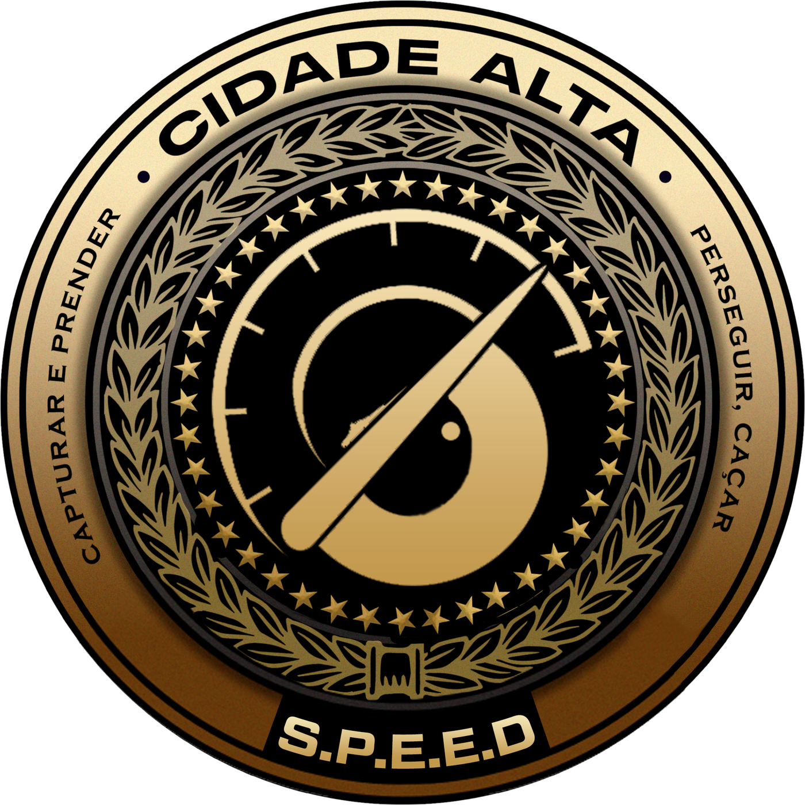
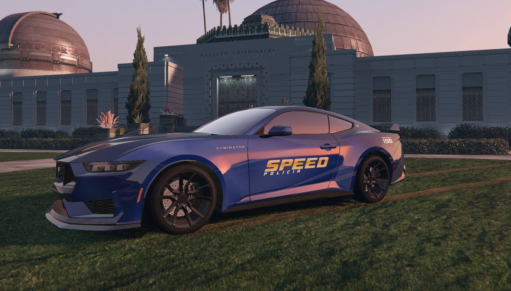
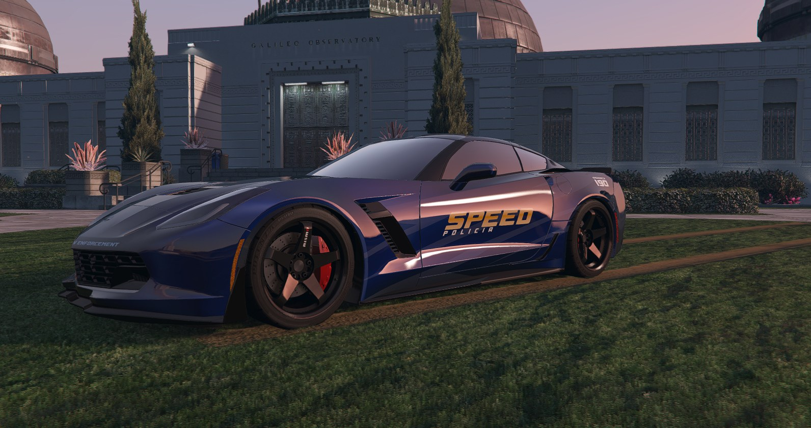
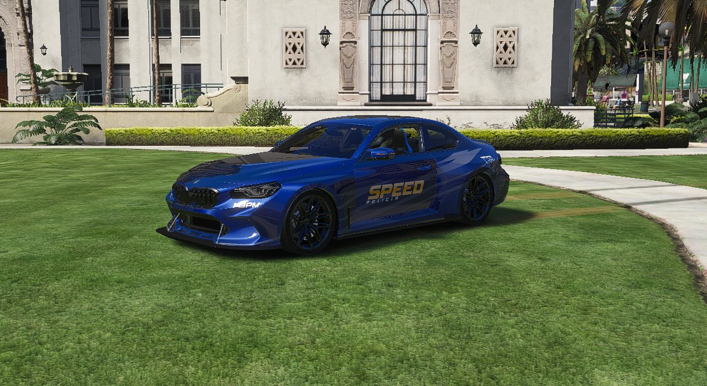
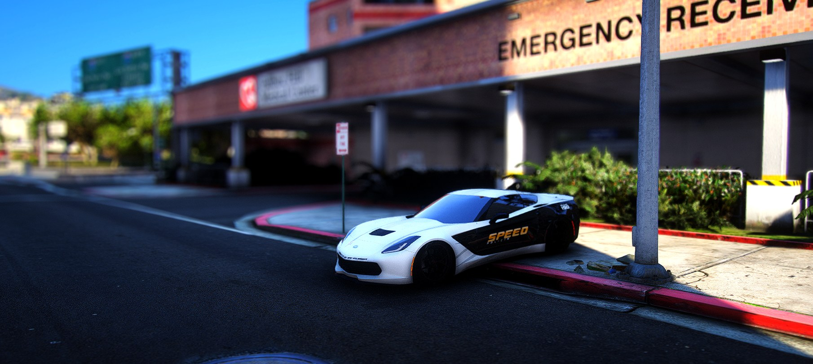
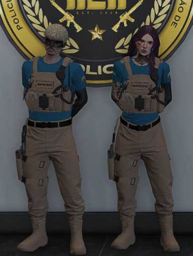
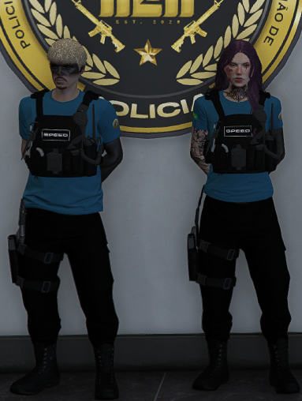
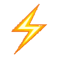

SPEED1° BPM-AV
Nossa unidade, SPEED, é composta por diversos oficiais, onde todos eles são altamente capacitados para realizarem acompanhamentos de alta velocidade, sendo esse seu principal objetivo, ou seja, como o próprio nome diz, é uma unidade de resposta rápida. Dessa forma, contamos apenas com os melhores pilotos da cidade, sempre mantendo a excelência em todos os procedimentos.
Não importa onde se esconda, vou te caçar até o inferno

Equipamento
Atualmente, nossa unidade conta com três viaturas em operação: Dominator, Coquette e Cypher. Ambas são liberadas para Pilotos Oficiais+, sendo a principal unidade de apoio para essas funções. Essa organização visa garantir a distribuição adequada dos recursos e assegurar que a viatura seja usada conforme a experiência e a necessidade de cada membro da equipe.
As viaturas são de total responsabilidade dos pilotos a quem pertencem. É fundamental que cada veículo esteja sempre em perfeitas condições, devidamente reparado, abastecido e pronto para oferecer o suporte necessário ao batalhão. A manutenção e cuidado com esses equipamentos são essenciais para garantir a eficiência e segurança das operações, refletindo o compromisso de cada piloto com o bom funcionamento e a prontidão do grupamento.



Cores Liberadas
Ponto de QRV

Atualmente a unidade SPEED mantém seu ponto de QRV estabelecido no Pillbox Medical Center, permanecendo estacionada no local, assegurando a pronta resposta nas QRU.
Fardamentos
Piloto Oficial

* Uso da jaqueta pra fora liberado após o término do trote.
Piloto Veterano+

Todos os Pilotos conectados à SPEED devem utilizar os uniformes da unidade conforme os exemplos mostrados nas imagens acima. Sendo Piloto Oficial, o oficial pode utilizar somente a camisa da SPEED (seja pra fora ou não), exceto as de Comando e a farda preta. É importante ressaltar que máscaras e chapéus da SPEED são liberados apenas para Pilotos. Aos Pilotos Veteranos+, a utilização do colete balístico no fardamento se torna opcional, exceto em ações.
A uniformidade no vestuário é essencial para manter a coesão e a identidade visual da unidade, facilitando o reconhecimento dos membros da SPEED durante o dia a dia e garantindo uma aparência profissional. Certifiquem-se de seguir essas diretrizes rigorosamente para assegurar que todos estejam adequadamente identificados e representando a unidade com excelência.
Regras Gerais
Como o próprio nome indica, a SPEED é uma unidade de resposta rápida. Dessa forma, contamos apenas com os melhores pilotos da cidade, garantindo a excelência em todos os procedimentos.
Cada membro da SPEED é treinado para manejar situações de alta pressão com precisão e eficiência, destacando-se nos acompanhamentos mais desafiadores. Nosso compromisso é manter um padrão elevado de desempenho, assegurando que todas as operações sejam conduzidas com máxima competência e segurança.
No entanto, na SPEED, existem regras que todos devemos seguir, tais como:
É estritamente proibido ficar usando sua viatura de maneira desorientada e desgovernada, utilizando-a como um mecanismo de bate-bate.
Não se estressar por qualquer motivo, principalmente por estilos de fuga que diferem do seu. Caso você não tenha paciência para manter um acompanhamento limpo e saudável, não será bem-vindo em nossa unidade.
Dentro da unidade, temos um sistema semelhante às advertências de registro militar. À primeira advertência acarretará na suspensão de 48 horas de patrulhamento com a SPEED; a segunda advertência acarretará a suspensão de 7 dias de patrulhamento com a SPEED; e na terceira e última advertência, o oficial será convidado a se retirar da unidade.
A manobra PIT é de uso exclusivo dos Pilotos com curso PIT.
O equipamento de SPIKE é de uso exclusivo dos Pilotos das divisões de Acompanhamento (SPEED e GTM).
Respeitar os colegas da unidade é fundamental para manter a harmonia e o espírito de equipe. Trate a todos com o devido respeito e empatia. A falta de respeito não será tolerada na unidade nem no batalhão.
Especialização
Durante todo o processo de recrutamento e estágio, trabalhamos na especialização dos pilotos. Nesta etapa, lapidamos o oficial para que desenvolva habilidades na pilotagem de viaturas mais ágeis e rápidas, além de focar na questão da modulação, que é primordial para sua evolução na unidade.
Contudo, deixamos claro que o enfoque da especialização não está apenas na capacidade de acompanhamento e modulação, mas também na evolução que o estagiário ou piloto pode alcançar dentro da unidade e no batalhão. Como mencionado anteriormente, valorizamos muito o oficial que preza e realiza seus procedimentos com excelência.
Conduta de Acompanhamento
A SPEED terá como foco principal os QRU's de veículos de alta performance, nos quais as demais viaturas não conseguiriam manter o acompanhamento. Para isso, além dos pilotos mais capacitados do 1º BPM-AV, contamos também com os melhores na modulação, assegurando a melhor resposta possível durante um acompanhamento.
Nos acompanhamentos a motocicletas, a GTM deverá ser a primária; em veículos menores, por exemplo Panto, Brioso e Issis, a GTM poderá ser a primária, e a SPEED deve se manter na secundária.
Lembramos que as noções passadas no curso de acompanhamento são plenamente eficazes em nossa unidade. Portanto, devemos sempre seguir as medidas preconizadas neste manual, garantindo que os oficiais realizem os acompanhamentos conforme todas as normas.
Em acompanhamentos habituais, poderão participar no máximo duas unidades da SPEED. No entanto, se o veículo acompanhado for de alta performance (A e S) e não houver outra viatura disponível para prestar apoio, serão permitidas três unidades da SPEED no acompanhamento. É recomendável que a terceira unidade leve uma viatura 4 portas para auxiliar na condução do indivíduo caso o acompanhamento seja bem-sucedido.
Em acompanhamentos de código 3, não existe limite para o número de unidades da SPEED envolvidas, sendo o bom senso a principal orientação, conforme dispõe nosso manual de acompanhamento.
Neutralização de Veículos
Além do uso progressivo da força utilizado nos procedimentos de abordagem do nosso dia a dia, esse conceito também se aplica ao acompanhamento. Nessa situação, um piloto da nossa unidade precisa saber como realizar essa progressão para, em um caso concreto, tomar a melhor decisão e, consequentemente, salvar mais vidas. Veja, então, os níveis da progressão da força nos acompanhamentos:
É o acompanhamento mais habitual do nosso dia a dia: aquele em que o indivíduo apenas tenta fugir e não coloca diretamente a própria vida ou a de terceiros em perigo. Logo, o acompanhamento deve, sem exceção, seguir de maneira limpa, sem nenhuma intervenção direta por parte dos oficiais.
Durante um acompanhamento, o indivíduo que está se evadindo pode colocar em perigo a vida de terceiros e até a dos oficiais. Nesses casos, precisamos tomar algumas atitudes rápidas. Nossa unidade tem papel fundamental nessas decisões, então segue abaixo a lista das atitudes indicadas:
Se o veículo acompanhado atropelar um indivíduo e/ou uma GTM e não parar para prestar apoio, primeiramente verbalize ao indivíduo explicando o ocorrido. Caso ele volte a repetir, deverá seguir a seguinte ordem: SPEED (aplicação do “P.I.T” e BOX / Spike) → GRA (liberação de disparos no pneu) → SGT+ (liberação de disparos no pneu). Apenas quando o disparo for liberado.
Se o indivíduo sofre o primeiro resgate, deverá seguir a ordem: SPEED (aplicação do “P.I.T” e BOX / Spike), adicionando 2 vagas ao acompanhamento.
Se o indivíduo sofre o segundo resgate, deverá seguir a ordem: SPEED (aplicação do “P.I.T” e BOX / Spike) → GRA (liberação de disparos no pneu) → Alto Comando (liberação de disparos no pneu).
Se o indivíduo sofre um resgate e o veículo que oferece o resgate é uma motocicleta, ou se o indivíduo cai duas vezes da moto, deverá ser chamada a GTM (disparos no pneu).
Obs¹: os SGT+ e os pilotos da SPEED possuem total autonomia para analisar a situação e avaliar se é o caso de tomar alguma atitude referente ao acompanhamento em questão. Contudo, frisa-se que uma unidade não pode interferir na outra; dessa forma, essas divisões são autônomas entre si para decidir o que é melhor em cada situação.
Obs²: se nas situações elencadas acima as hipóteses se esgotarem, ou seja, se não houver SGT+ em QRV ou GTM (em acompanhamentos a motocicletas), o acompanhamento deverá seguir normalmente.
Durante um acompanhamento, se o indivíduo que estiver fugindo colocar a própria vida ou a de terceiros em perigo iminente, seja por estar com uma arma de fogo e efetuar disparos, seja por tentar derrubar sua viatura de locais altos de forma proposital, ou qualquer outra situação que coloque sua integridade em perigo, você estará autorizado a fazer cessar esse perigo por meio da neutralização do indivíduo que gera a situação.
Créditos
